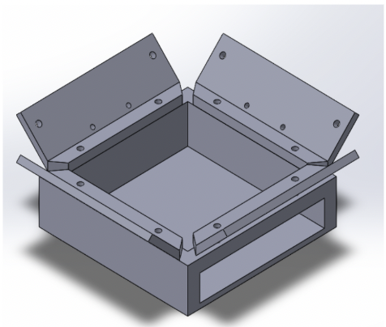
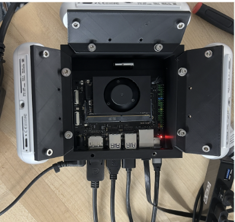
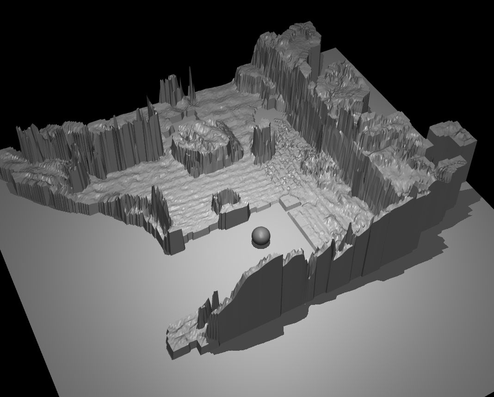

Sensor-Integrated Head Design



Work In Progress
My project involves creating a multi-camera head design for the Unitree G1 Humanoid robot that integrates several Intel RealSense RGB-D sensors with an NVIDIA Jetson computer. I developed custom scripts in ROS2 and Python to synchronize the cameras, process point cloud data, and align the sensors so that their combined view produces a comprehensive picture of the robot’s surroundings.
On the mechanical side, I designed and 3D printed a camera holder in SolidWorks to mount the sensors at optimized angles, making sure the data can be geometrically aligned. Beyond hardware, I am building a pipeline that converts live point cloud data into real-time 3D heightfield simulations using MuJoCo. This helps us test perception strategies in simulation before deploying them on the physical robot.
The ultimate goal is to develop a head that not only houses the sensors but also supports dynamic perception (30 Hz or faster). This will allow the humanoid robot to operate more safely and effectively in real-world environments.
Skills: 3D printing, SolidWorks, python, ROS2, RViz2, MuJoCo, NVIDIA Jetson, Linux